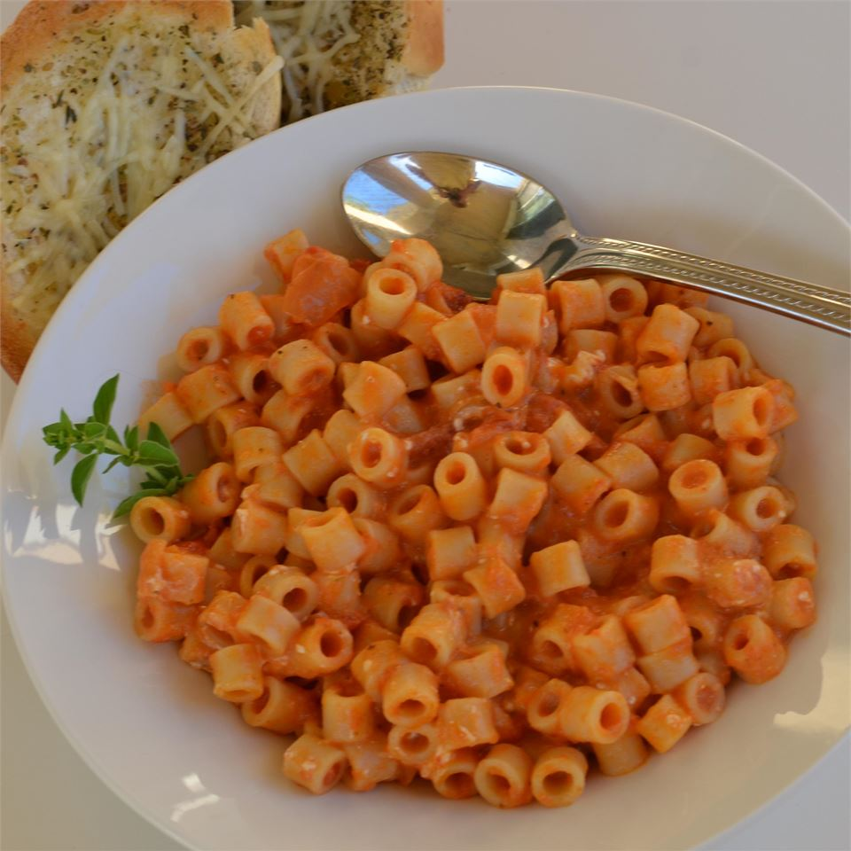

Red Pepper Ditalini Soup
Ingredients:
- 1 lb ground mild Italian sausage
- 2 boxes Red Pepper soup
- Ditalini pasta
- Spinach
Method:
- Brown sausage in stock pot.
- When sausage is browned, add red pepper soup and pasta.
- Bring to boil, stirring occasionally.
- Cook until pasta is desired doneness.
- Remove from heat, add chopped spinach and stir.
- Very hot, allow to cool a few minutes before serving.